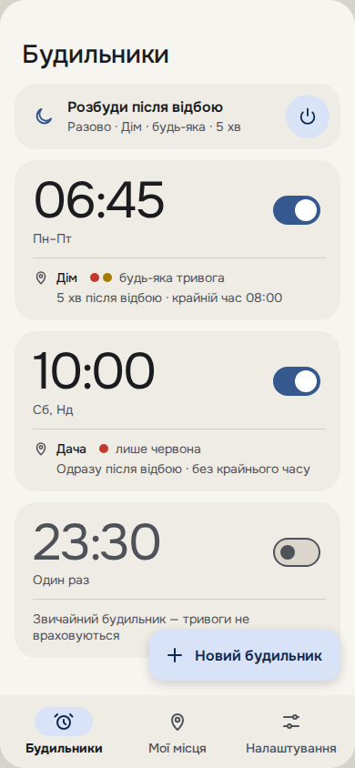
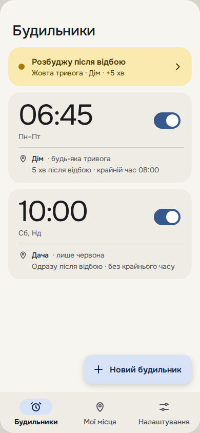
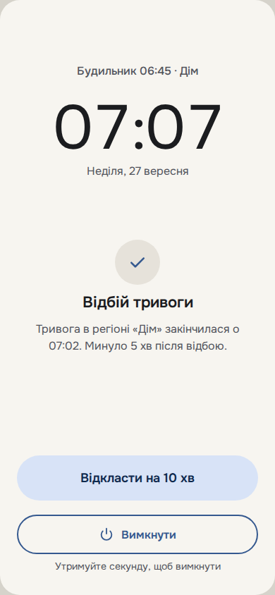

Відбій
Будильник, який не дзвонить, поки у вашому регіоні триває повітряна тривога, і дзвонить після відбою.
Завантажити APKЯк це працює
Будильник і регіон
Ставите час, дні тижня й регіон: громаду, район або область. Регіони можна зберегти в «Моїх місцях» — «Дім», «Дача».
Тривоги немає — дзвонить
У час будильника застосунок перевіряє тривогу. Якщо її немає, будильник дзвонить як звичайний.
Тривога — чекає відбою
Якщо тривога є, будильник мовчить і дзвонить після відбою. Можна додати паузу після відбою й крайній час, коли дзвонити в будь-якому разі.
Сумнів — дзвонить. Немає інтернету, сервіс не відповідає чи дані старші за 3 хвилини — будильник дзвонить, а на екрані пише чому. Будильник, що задзвонив дарма, кращий за той, що не задзвонив.
Що вміє
Рівень тривоги
Для кожного будильника: чекати на будь-яку тривогу чи лише на червону (ракетну) — жовту (дронову) тоді не враховує.
Розбуди після відбою
Разовий режим: одна кнопка на головному екрані — і застосунок розбудить вас, щойно скінчиться тривога, що триває зараз.
Поки чекає
У сповіщенні видно рівень, причину й час оновлення. Можна попросити задзвонити через кілька хвилин або не дзвонити сьогодні.
Ваш регіон, а не сусідній
Враховує тривоги у вашій громаді, її районі та області. Тривоги в сусідніх громадах будильник не затримують.
Як виглядає



Макети інтерфейсу; у застосунку окремі деталі можуть відрізнятися.
Встановлення
«Відбою» немає в Google Play, тому APK встановлюється вручну. Це хвилина.
- Натисніть «Завантажити APK» на телефоні.
- Відкрийте завантажений файл. Android попросить дозволити встановлення з браузера чи «Файлів» — дозвольте для цього застосунку.
- Якщо Google Play Захист попередить про невідомого розробника, це через те, що застосунку немає в Google Play. Розгорніть подробиці в попередженні й виберіть «Усе одно встановити».
- Відкрийте «Відбій» → Налаштування → Дозволи й увімкніть усе, що там є: сповіщення, точні будильники, показ на екрані блокування, роботу у фоні без обмежень.
Samsung. One UI сам присипляє застосунки, які давно не відкривали, — тоді будильник не зможе перевірити тривогу й дзвонитиме у свій час з написом «Застосунок приспано».
Щоб цього не було, у налаштуваннях телефона відкрийте Акумулятор → Обмеження використання у фоні, додайте «Відбій» до застосунків, які ніколи не присипляються, і переконайтеся, що його немає серед застосунків у глибокому сні. Назви пунктів трохи відрізняються в різних версіях One UI; на екрані «Дозволи» в застосунку є кнопка, що відкриває потрібне місце.
Оновлення
Застосунок сам скаже про нову версію банером на головному екрані з кнопкою «Завантажити». Новий APK встановлюється поверх старого — будильники, місця й налаштування лишаються.
Як перевірити, що APK справжній
Усі версії підписані одним ключем. Android і так не встановить оновлення з іншим підписом, але перший APK можна перевірити вручну. Відбиток сертифіката (SHA-256):
75:58:AD:63:74:C2:52:1F:F3:EF:34:DA:4B:49:33:50:D8:9C:CB:EA:63:E4:01:FC:DE:4D:CF:E2:6B:22:7E:EA
На комп'ютері з Android SDK: apksigner verify --print-certs vidbiy.apk — рядок «SHA-256 digest» має збігтися (без двокрапок).
Приватність
Нічого не збирає
Без реєстрації, геолокації, реклами й аналітики.
Регіон лишається на телефоні
Сервер віддає стан тривог одразу для всієї України, а телефон сам вибирає ваш регіон. Сервер не знає ні регіону, ні будильників.
Резервна копія — ваша
Будильники й місця потрапляють лише в стандартну резервну копію Android у вашому Google-акаунті.
Важливо
«Відбій» не попереджає про тривогу
Його завдання — дати поспати, поки триває тривога, а не розбудити, коли вона почалася. Щоб дізнаватися про тривоги, тримайте офіційний застосунок оповіщення й ухвалюйте рішення про укриття самі.
Звідки дані
З офіційного API застосунку «Повітряна тривога» (api.ukrainealarm.com) через наш сервер. Враховуються лише повітряні тривоги. «Відбій» — незалежний некомерційний проєкт і не пов'язаний з розробниками «Повітряної тривоги».
Тривога триває понад добу
Таку тривогу будильник не враховує, інакше в регіонах з постійною тривогою він не дзвонив би ніколи. Він дзвонить у свій час, як звичайний.
Телефон перезавантажився вночі
До першого розблокування застосунок не бачить ваших налаштувань (Android шифрує їх до введення PIN). Будильник однаково задзвонить у свій час, але без перевірки тривоги — з написом «Телефон перезавантажився».